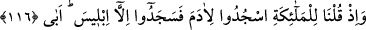

Hâfız der ki:
Hakk’ın lütfu yâr olmasa şeytanın tuzağı pek çetindir
Yoksa insan zor ve hile ile lânetli şeytana gâlib olamaz
Denilmiştir ki: O vakit (Hz. Âdem zamanında) insandan unutmanın sorumluluğu
kaldırılmamıştı, onun için Âdem (a.s.) ondan muâheze olundu. Unutmanın sorumluluğu
sâdec bizden/Muhammed ümmetinden kaldırıldı.
et-Te’vîlâtü’n-Necmiyye’de şöyle der: “Andolsun biz, daha önce” yani ilk olarak var
olmadan once “de Âdem’e” bizden başkasına gönül vermemesi ve bizim
dışımızdakilere boyun eğmemesi konusunda “ahit vermiştik.” “Ne var ki o,” cennete
girince ve cennetin nimetlerine bakınca bizim ahdimizi “unuttu” ağaca ilgi duydu ve
şeytana boyun eğdi. “Onda azim de bulmadık.”
Burada işâret etmektedir ki Allah, Hz. Adem’i yarattığı ve ona bütün sıfatlarıyla
tecellî ettiği vakit, onun yaratılmışlığı ile ilgili sıfatlarının zulümâtı, rubûbiyyet
sıfatlarının nurlarının tecellîsinin parlamasıyla mağlub oldu. Onda mâsivâya bağlanma
ve O’ndan başkasına boyun eğme azmi kalmadı. Onda bulunan beşerî-hayvânî arzular
harekete geçip ve nefsânî-insânî şehvetleri de peşine takarak hazlarını tatmin ile meşgul
olunca Allâh’ın haklarını yerine getirmeyi unuttu. İşte bu sebeple insanlar, “nâs” diye
isimlendirilmiştir. Çünkü, insan unutan bir varlıktır. İşte bu yaptıklarından dolayı onda
birbiri üstüne yığılmış zulümât/karanlıklar neş’et etti, yığılıp toplandı. Nihayet maârif
güneşlerinin önüne geçen bulutlar ve avârif aylarının önüne geçen perdeler hâline geldi.
Allâh’a verdiği ahidleri ve sözleri unuttu. Kendisine yasaklanan ağaca uzandı.”
Allâme şöyle demiştir:
Ey insancık, âdetin oldu nisyân!
İnsanların en hatırlayanı unutkan, kalblerin en rakikı kasvetli!
Ebü’l-Feth Büstî, reislerden birisine unutkanlığından özür beyân ederek şöyle dedi:
Ey insanlara karşı en çok cömerd olan,
Ey kötülüklerden yüz çevirmede halkın en iyisi,
Unuttum sana vaadimi, unutmak bağışlanır
Sen de bağışla, çünkü ilk unutan ilk insandır.
Şunu bil ki nisyânın en büyük sebebi isyândır. Allah’tan bizi korumasını ve muhâfaza
etmesini dileriz.